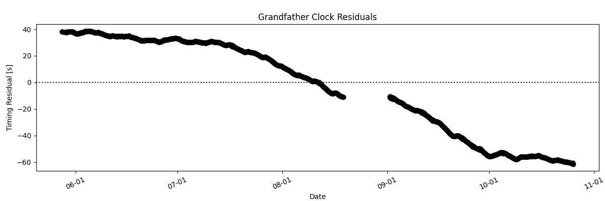

In 1975, my grandfather built a grandfather clock that has now made its way into my home. Note both the cable sneaking out the bottom of the door going to the raspberry pi, as well as the framed photo of the clock kit shortly after it was bought by my grandfather

As is only natural, I decided to use pulsar inspired phase coherent timing in order to tune the clock to the proper frequency. To time the clock, I have an old webcam hooked into a raspberry pi. Every few minutes, the webcam records two seconds of audio, and folds the data at a one second period to get a pulse profile. This pulse profile is convolved with a standard profile made from summing a large number of pulses & I measure a phase difference.
If you plot these residuals, and error in frequency will show itself as a linear drift -- if the grandfather clock is too slow, each consectutive pulse will be later & later and the phase measurements will drift down the plot (and likewise up for the clock being too fast).
When I first started, the clock was approximately 1.3 mHz out of sync! Luckily, by fine tuning the pendulum set screw down to ~1/16ths of a turn, I was able to get this down to ~a few μHz which seems to be the limit with my current set-up. Pretty good for a few 50 year old pieces of brass!
Timing Residuals
Below, I show the timing residuals of the clock after fine tuning in reference to the National Research Council of Canada's official clock. The data here is ~live -- being pushed here every 30 minutes.

The small plaque inside the clock indicating the year it was built.